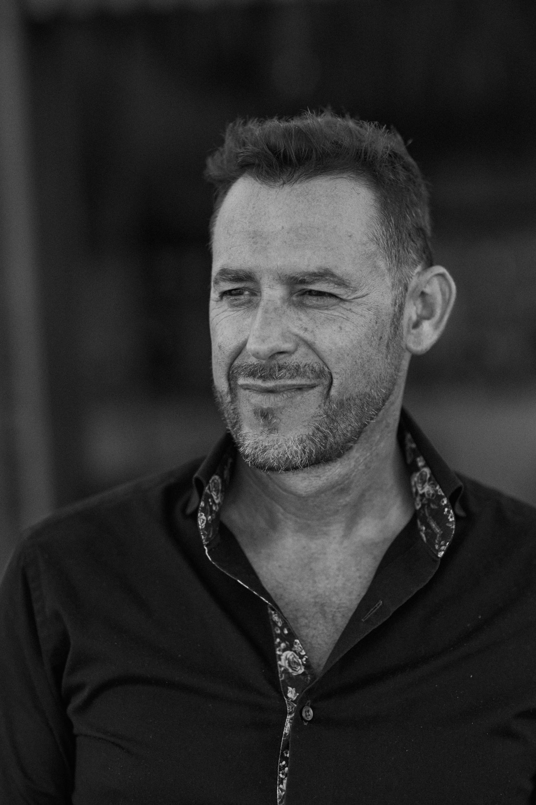

Un restaurante rentable no se improvisa: se diseña plato a plato y turno a turno.A profitable restaurant isn't improvised: it's designed dish by dish, shift by shift.
Llevo más de veinte años en sala, en cocina y en los despachos: dirigiendo equipos, abriendo locales y levantando grupos de restauración en España y Dubái, donde cofundé Rubia Gallega Restaurant Group.I've spent over twenty years on the floor, in the kitchen and in the office: leading teams, opening venues and building restaurant groups in Spain and Dubai, where I co-founded Rubia Gallega Restaurant Group.
Hoy pongo esa experiencia al servicio de propietarios e inversores que quieren decisiones con fundamento.Today I put that experience at the service of owners and investors who want well-founded decisions.